Matlab-SystematicallyLearn1
Matlab基础学习
(先看先前的Matlab版本)
Matlab是一门语言：
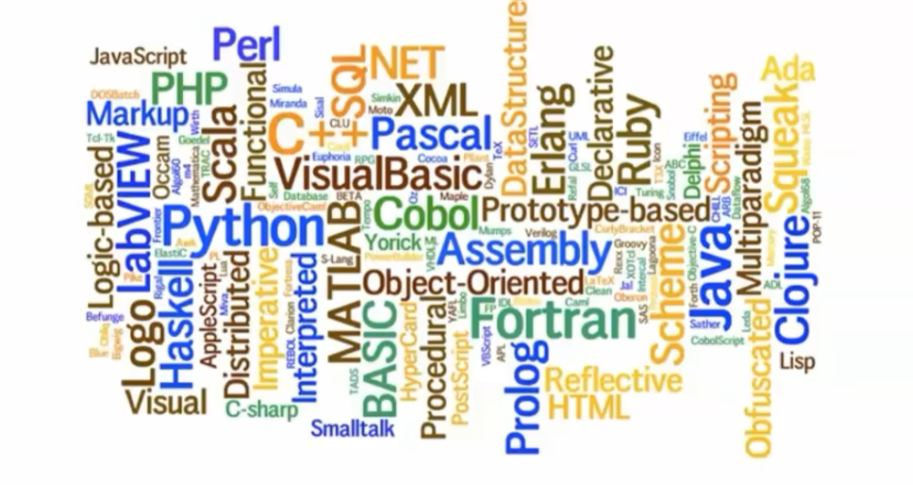
一些注意点：
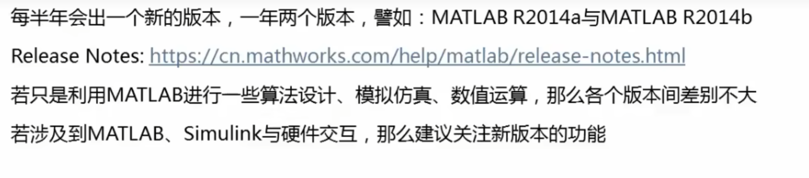
开始入门
首先，Matlab自己也是一门编程语言。这意味着它可以有变量的命名。同其他编程语言类似，
1.Matlab区分大小写，
2.变量名长度不得超过63位，
3.并且由字母，数字和下划线组成。但不可以使用标点。
By the way。同其他命名规则一致——变量名应当简洁明了！
数据类型
有以下几种类形：
数字，字符和字符串，矩阵（数组），元胞数据，结构体（对，C语言那种）。
demo与散记
1.在Matlab里，我们用%%表达注释，我们开一个脚本看看：
%% I. 清空环境变量及其Command Window的所有命令
clear all
clc2.变量名规则展示
%% II.
A = 2
a = 3
%% abcdefgjfpwoejfoba4ett4gbamjofwoFP3VN0R92UDX023gag3w523cd2n3o823apc7i$3rc7i34vc98p = 2
%% 取消注释看看
%% 3b = 4 (x)
a_2 = 5 3.几种常见的类型
2 + 4 %% 数字
s = 'a' %% 字符
abs(s) %% 返回字符的ASCII码值
char(65) %% 返回对应的ASCII：A
num2str(65) %%返回字符串的65
str = 'Learning matlabs machine learning'
length(str)
doc num2str; %% 快速查看文档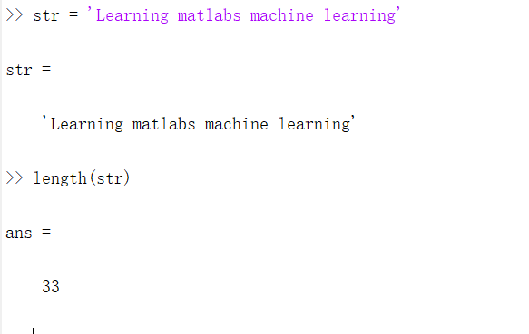
矩阵操作
定义+初始化
A = [1 2 3;4 5 2; 3 2 7] %%可以直接赋值指定
B = A' %%转置
C = A(:) %%降维至一个列向量
D = inv(A) %%求解逆矩阵
A*D %%计算精度问题，往往可能会有-0.0000出现特殊
E = zeros(10,5,3) %% 10*5*3的数组
E(:,:,1) = rand(10,5)
E(:,:,2) = randi(5,10,5)
E(:,:,3) = randn(10,5)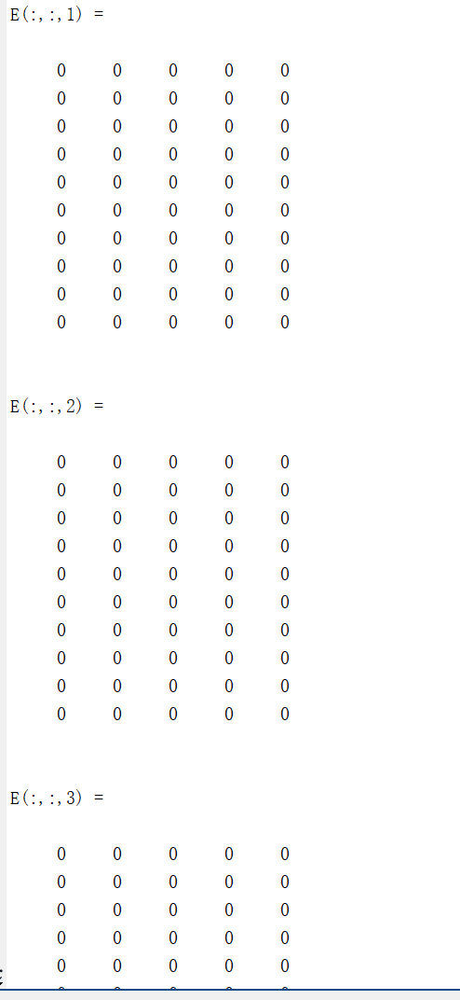
X = rand 返回一个在区间 (0,1) 内均匀分布的随机数。
X = rand(n) 返回一个 n×n 的随机数矩阵。
X = rand(sz1,...,szN) 返回由随机数组成的 sz1×...×szN 数组，其中 sz1,...,szN 指示每个维度的大小。例如：rand(3,4) 返回一个 3×4 的矩阵。
X = rand(sz) 返回由随机数组成的数组，其中大小向量 sz 指定 size(X)。例如：rand([3 4]) 返回一个 3×4 的矩阵。
X = rand(___,typename) 返回由 typename 数据类型的随机数组成的数组。typename 输入可以是 'single' 或 'double'。您可以使用上述语法中的任何输入参数。
X = rand(___,'like',p) 返回由 p 等随机数组成的数组；也就是与 p 同一对象类型。您可以指定 typename 或 'like'，但不能同时指定两者。
X = rand(s,___) 从随机数流 s 而不是默认全局流生成数字。要创建一个流，请使用 RandStream。指定 s，后跟上述语法中的任意参数组合，但涉及 'like' 的组合除外。此语法不支持 'like' 输入。X = randi(imax) 返回一个介于 1 和 imax 之间的伪随机整数标量。
X = randi(imax,n) 返回 n×n 矩阵，其中包含从区间 [1,imax] 的均匀离散分布中得到的伪随机整数。
X = randi(imax,sz1,...,szN) 返回 sz1×...×szN 数组，其中 sz1,...,szN 指示每个维度的大小。例如，randi(10,3,4) 返回一个由介于 1 和 10 之间的伪随机整数组成的 3×4 数组。
X = randi(imax,sz) 返回一个数组，其中大小向量 sz 定义 size(X)。例如，randi(10,[3,4]) 返回一个由介于 1 和 10 之间的伪随机整数组成的 3×4 数组。
X = randi(imax,classname) 返回一个伪随机整数，其中 classname 指定数据类型。classname 可以为 'single'、'double'、'int8'、'uint8'、'int16'、'uint16'、'int32' 或 'uint32'。
X = randi(imax,n,classname) 返回数据类型为 classname 的 n×n 数组。
X = randi(imax,sz1,...,szN,classname) 返回数据类型为 classname 的 sz1×...×szN 数组。
X = randi(imax,sz,classname) 返回一个数组，其中大小向量 sz 定义 size(X)，classname 定义 class(X)。
X = randi(imax,'like',p) 返回一个类如 p 的伪随机整数；即，具有相同的数据类型（类）。
X = randi(imax,n,'like',p) 返回一个类如 p 的 n×n 数组。
X = randi(imax,sz1,...,szN,'like',p) 返回一个类如 p 的 sz1×...×szN 数组。
X = randi(imax,sz,'like',p) 返回一个类如 p 的数组，其中大小向量 sz 定义 size(X)。
X = randi([imin,imax],___) 使用以上任何语法返回一个数组，其中包含从区间 [imin,imax] 的均匀离散分布中得到的整数。
X = randi(s,___) 从随机数流 s 而不是默认全局流生成整数。要创建一个流，请使用 RandStream。指定 s，后跟上述语法中的任意参数组合，但涉及 'like' 的组合除外。此语法不支持 'like' 输入。X = randn 返回一个从标准正态分布中得到的随机标量。
X = randn(n) 返回由正态分布的随机数组成的 n×n 矩阵。
X = randn(sz1,...,szN) 返回由随机数组成的 sz1×...×szN 数组，其中 sz1,...,szN 指示每个维度的大小。例如：randn(3,4) 返回一个 3×4 的矩阵。
X = randn(sz) 返回由随机数组成的数组，其中大小向量 sz 定义 size(X)。例如：randn([3 4]) 返回一个 3×4 的矩阵。
X = randn(___,typename) 返回由 typename 数据类型的随机数组成的数组。typename 输入可以是 'single' 或 'double'。您可以使用上述语法中的任何输入参数。
X = randn(___,'like',p) 返回由 p 等随机数组成的数组；也就是与 p 同一对象类型。您可以指定 typename 或 'like'，但不能同时指定两者。
X = randn(s,___) 从随机数流 s 而不是默认全局流生成数字。要创建一个流，请使用 RandStream。指定 s，后跟上述语法中的任意参数组合，但涉及 'like' 的组合除外。此语法不支持 'like' 输入。A = cell(1,6)
A{2} = eye(3)
A{5} = magic(5)
B = A{5}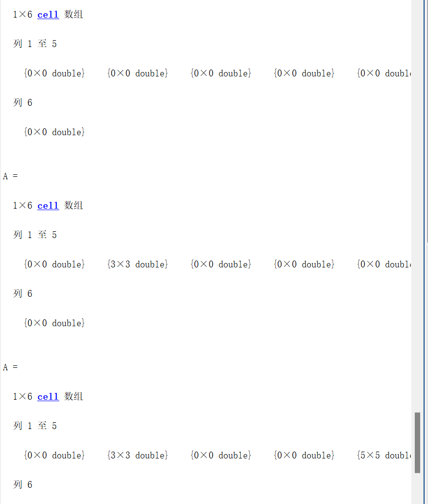
元胞数组是一种包含名为元胞的索引数据容器的数据类型，其中的每个元胞都可以包含任意类型的数据。元胞数组通常包含文本列表、文本和数字的组合或者不同大小的数值数组。通过将索引括在圆括号 () 中可以引用元胞集。使用花括号 {} 进行索引来访问元胞的内容。
结构体不多用，可以参看C的结构体怎样操作的，一样的。
bB = 1:2:9
生成一个列向量：使之从1起到9停，间隔为2 的列向量！
repmat(B,3,1) 拷贝B至三行一列
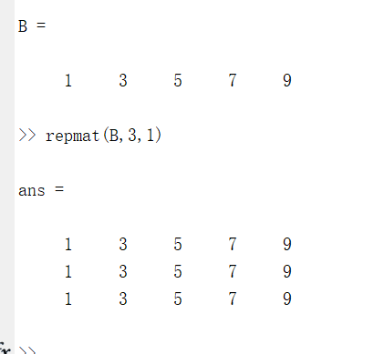
矩阵里有六种常见操做：加减，矩阵乘()，矩阵除( / )（求逆），对应元素相乘(.\)，相除(./)
程序控制模块
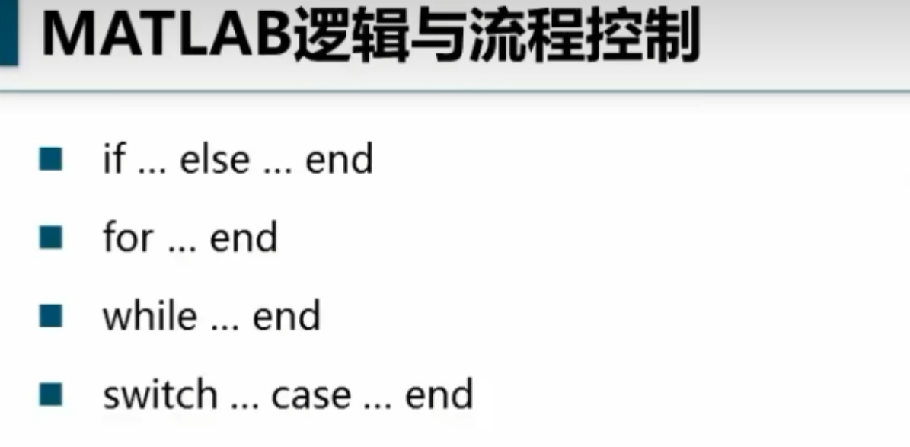
if expression
statements
elseif expression
statements
else
statements
end
if expression, statements, end 计算表达式并在表达式为 true 时执行一组语句。表达式的结果非空并且仅包含非零元素（逻辑值或实数值）时，该表达式为 true。否则，表达式为 false。
elseif 和 else 模块是可选的。这些语句仅在 if...end 块中前面的表达式为 false 时才会执行。if 块可以包含多个 elseif 块。switch switch_expression
case case_expression
statements
case case_expression
statements
...
otherwise
statements
end
switch switch_expression, case case_expression, end 计算表达式并选择执行多组语句中的一组。每个选项为一个 case。
switch 块会测试每个 case，直至一个 case 表达式为 true。case 在以下情况下为 true：
对于数字，case_expression == switch_expression。
对于字符向量，strcmp(case_expression,switch_expression) == 1。
对于支持 eq 函数的对象，case_expression == switch_expression。重载的 eq 函数的输出必须为逻辑值或可转换为逻辑值。
对于元胞数组 case_expression，元胞数组的至少一个元素与 switch_expression 匹配，如上述对数字、字符向量和对象的定义。
当 case 表达式为 true 时，MATLAB® 执行对应的语句，然后退出 switch 块。
计算的 switch_expression 必须为标量或字符向量。计算的 case_expression 必须为标量、字符向量或者标量或字符向量的元胞数组。
otherwise 块是可选的。仅当没有 case 为 true 时，MATLAB 才会执行这些语句。for index = values
statements
end
for index = values, statements, end 在循环中将一组语句执行特定次数。values 为下列形式之一：
initVal:endVal - index 变量从 initVal 至 endVal 按 1 递增，重复执行 statements 直到 index 大于 endVal。
initVal:step:endVal - 每次迭代时按值 step 对 index 进行递增，或在 step 是负数时对 index 进行递减。
valArray - 每次迭代时从数组 valArray 的后续列创建列向量 index。例如，在第一次迭代时，index = valArray(:,1)。循环最多执行 n 次，其中 n 是 valArray 的列数，由 numel(valArray(1,:)) 给定。输入 valArray 可属于任何 MATLAB® 数据类型，包括字符向量、元胞数组或结构体。语法
while expression
statements
end
while expression, statements, end 计算一个表达式，并在该表达式为 true 时在一个循环中重复执行一组语句。表达式的结果非空并且仅包含非零元素（逻辑值或实数值）时，该表达式为 true。否则，表达式为 false。 很是类似，哈哈。
基本绘图
重点讲过了先前，就略过了
plot(X,Y)
plot(X,Y,LineSpec)
plot(X1,Y1,...,Xn,Yn)
plot(X1,Y1,LineSpec1,...,Xn,Yn,LineSpecn)
plot(Y)
plot(Y,LineSpec)
plot(___,Name,Value)
plot(ax,___)
h = plot(___)说明
plot(X,Y) 创建 Y 中数据对 X 中对应值的二维线图。
- 如果
X和Y都是向量，则它们的长度必须相同。plot函数绘制Y对X的图。 - 如果
X和Y均为矩阵，则它们的大小必须相同。plot函数绘制Y的列对X的列的图。 - 如果
X或Y中的一个是向量而另一个是矩阵，则矩阵的各维中必须有一维与向量的长度相等。如果矩阵的行数等于向量长度，则plot函数绘制矩阵中的每一列对向量的图。如果矩阵的列数等于向量长度，则该函数绘制矩阵中的每一行对向量的图。如果矩阵为方阵，则该函数绘制每一列对向量的图。 - 如果
X或Y之一为标量，而另一个为标量或向量，则plot函数会绘制离散点。但是，要查看这些点，您必须指定标记符号，例如plot(X,Y,'o')。
plot(X,Y,LineSpec) 设置线型、标记符号和颜色。
plot(X1,Y1,...,Xn,Yn) 绘制多个 X、Y 对组的图，所有线条都使用相同的坐标区。
plot(X1,Y1,LineSpec1,...,Xn,Yn,LineSpecn) 设置每个线条的线型、标记符号和颜色。您可以混用 X、Y、LineSpec 三元组和 X、Y 对组：例如，plot(X1,Y1,X2,Y2,LineSpec2,X3,Y3)。
plot(Y) 创建 Y 中数据对每个值索引的二维线图。
- 如果
Y是向量，x 轴的刻度范围是从 1 至length(Y)。 - 如果
Y是矩阵，则plot函数绘制Y中各列对其行号的图。x 轴的刻度范围是从 1 到Y的行数。 - 如果
Y是复数，则plot函数绘制Y的虚部对Y的实部的图，使得plot(Y)等效于plot(real(Y),imag(Y))。
plot(Y,LineSpec) 设置线型、标记符号和颜色。
plot(___,Name,Value) 使用一个或多个 Name,Value 对组参数指定线条属性。有关属性列表，请参阅 Line 属性。可以将此选项与前面语法中的任何输入参数组合一起使用。名称-值对组设置将应用于绘制的所有线条。
plot(ax,___) 将在由 ax 指定的坐标区中，而不是在当前坐标区 (gca) 中创建线条。选项 ax 可以位于前面的语法中的任何输入参数组合之前。
h = plot(___) 返回由图形线条对象组成的列向量。在创建特定的图形线条后，可以使用 h 修改其属性。有关属性列表，请参阅 Line 属性。
示例
创建线图
将 x 创建为由 0 和 2π 之间的线性间隔值组成的向量。在各值之间使用递增量 π/100。将 y 创建为 x 的正弦值。创建数据的线图。
x = 0:pi/100:2*pi;
y = sin(x);
plot(x,y)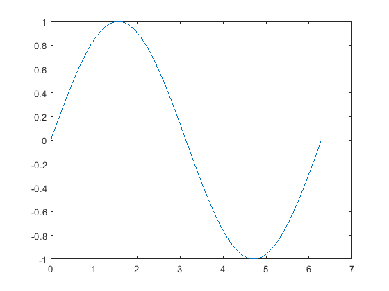
绘制多个线条
(matlab:openExample(‘graphics/PlotMultipleLinesExample’))
将 x 定义为 100 个介于 −2π 和 2π 之间的线性间隔值。将 y1 和 y2 定义为 x 的正弦和余弦值。创建上述两个数据集的线图。
x = linspace(-2*pi,2*pi);
y1 = sin(x);
y2 = cos(x);
figure
plot(x,y1,x,y2)根据矩阵创建线图
将 Y 定义为 magic 函数返回的 4×4 矩阵。
Y = magic(4)
Y = 4×4
16 2 3 13
5 11 10 8
9 7 6 12
4 14 15 1创建 Y 的二维线图。MATLAB® 将矩阵的每一列绘制为单独的线条。
figure
plot(Y)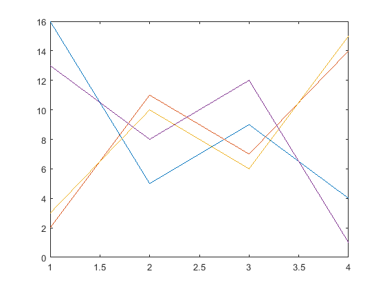
指定线型
绘制三条正弦曲线，每条曲线之间存在较小的相移。第一条曲线使用默认的线型。为第二条曲线指定虚线样式，为第三条曲线指定点线样式。
x = 0:pi/100:2*pi;
y1 = sin(x);
y2 = sin(x-0.25);
y3 = sin(x-0.5);
figure
plot(x,y1,x,y2,'--',x,y3,':')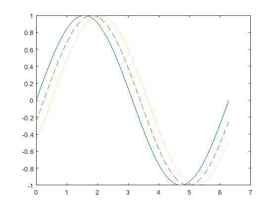
MATLAB® 按默认的色序循环使用线条颜色。
指定线型、颜色和标记
绘制三条正弦曲线，每条曲线之间存在较小的相移。第一条正弦曲线使用绿色线条，不带标记。第二条正弦曲线使用蓝色虚线，带圆形标记。第三条正弦曲线只使用青蓝色星号标记。
x = 0:pi/10:2*pi;
y1 = sin(x);
y2 = sin(x-0.25);
y3 = sin(x-0.5);
figure
plot(x,y1,'g',x,y2,'b--o',x,y3,'c*')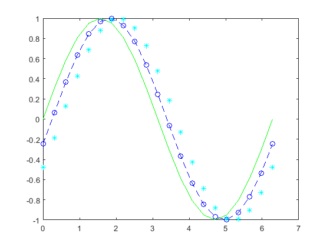
在特定的数据点显示标记
通过指定标记符号并将 MarkerIndices 属性设置为名称-值对组，创建一个线图并每隔四个数据点显示一个标记。
x = linspace(0,10);
y = sin(x);
plot(x,y,'-o','MarkerIndices',1:5:length(y))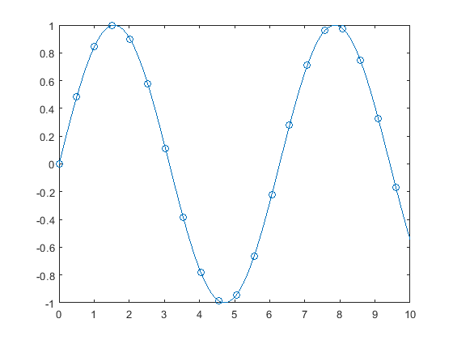
指定线宽、标记大小和标记颜色
(matlab:openExample(‘graphics/SpecifyLineWidthMarkerSizeAndMarkerColorExample’))
创建线图并使用 LineSpec 选项指定带正方形标记的绿色虚线。使用 Name,Value 对组来指定线宽、标记大小和标记颜色。将标记边颜色设置为蓝色，并使用 RGB 颜色值设置标记面颜色。
x = -pi:pi/10:pi;
y = tan(sin(x)) - sin(tan(x));
figure
plot(x,y,'--gs',...
'LineWidth',2,...
'MarkerSize',10,...
'MarkerEdgeColor','b',...
'MarkerFaceColor',[0.5,0.5,0.5])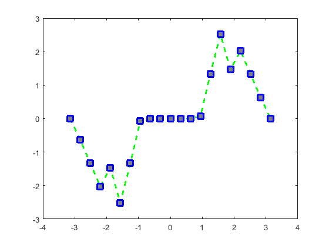
添加标题和轴标签
使用 linspace 函数将 x 定义为 0 到 10 之间 150 个值组成的向量。将 y 定义为 x 的余弦值。
x = linspace(0,10,150);
y = cos(5*x);创建余弦曲线的二维线图。使用 RGB 颜色值将线条颜色更改为蓝绿色。使用 title、xlabel 和 ylabel 函数为图形添加标题和轴标签。
figure
plot(x,y,'Color',[0,0.7,0.9])
title('2-D Line Plot')
xlabel('x')
ylabel('cos(5x)')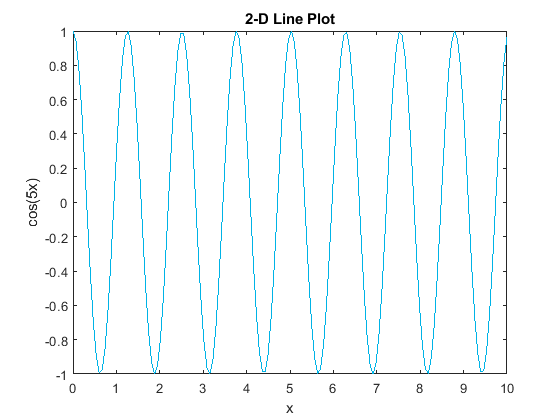
绘制持续时间并指定刻度格式
将 t 定义为 7 个介于 0 到 3 分钟之间的 duration 线性间隔值。绘制随机数据并使用 'DurationTickFormat' 名称-值对组参数指定 duration 刻度线的格式。
t = 0:seconds(30):minutes(3);
y = rand(1,7);
plot(t,y,'DurationTickFormat','mm:ss')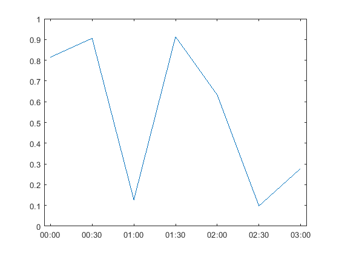
指定线图的坐标区
可以使用 tiledlayout 和 nexttile 函数显示分块图。调用 tiledlayout 函数以创建一个 2×1 分块图布局。调用 nexttile 函数创建一个坐标区对象，并将该对象返回为 ax1。通过将 ax1 传递给 plot 函数来创建顶部绘图。通过将坐标区传递给 title 和 ylabel 函数，为图添加标题和 y 轴标签。重复该过程以创建底部绘图。
% Create data and 2-by-1 tiled chart layout
x = linspace(0,3);
y1 = sin(5*x);
y2 = sin(15*x);
tiledlayout(2,1)
% Top plot
ax1 = nexttile;
plot(ax1,x,y1)
title(ax1,'Top Plot')
ylabel(ax1,'sin(5x)')
% Bottom plot
ax2 = nexttile;
plot(ax2,x,y2)
title(ax2,'Bottom Plot')
ylabel(ax2,'sin(15x)')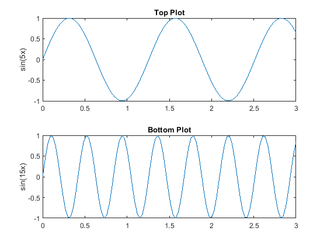
创建并修改线条
将 x 定义为 100 个介于 −2π 和 2π 之间的线性间隔值。将 y1 和 y2 定义为 x 的正弦和余弦值。为上述两个数据集分别创建线图，并在 p 中返回两个图形线条。
x = linspace(-2*pi,2*pi);
y1 = sin(x);
y2 = cos(x);
p = plot(x,y1,x,y2);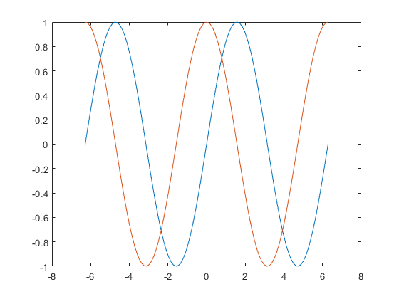
将第一个线条的线宽更改为 2。向第二行添加星形标记。使用圆点表示法设置属性。
p(1).LineWidth = 2;
p(2).Marker = '*';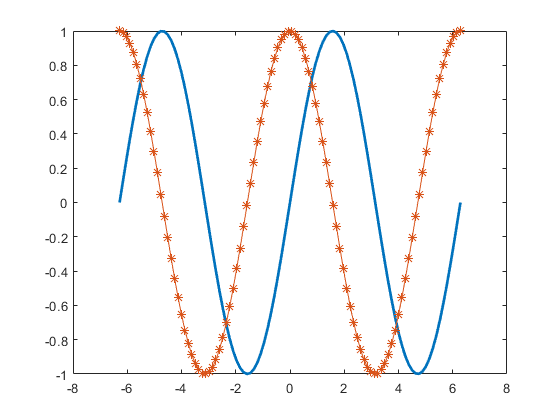
绘制圆形
绘制以点 (4,3) 为中心以 2 为半径的圆。使用 axis equal 可沿每个坐标方向使用相等的数据单位。
r = 2;
xc = 4;
yc = 3;
theta = linspace(0,2*pi);
x = r*cos(theta) + xc;
y = r*sin(theta) + yc;
plot(x,y)
axis equal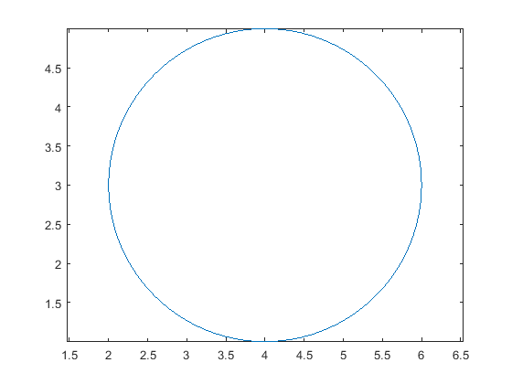
输入参数
Y - y 值 标量 | 向量 | 矩阵
y 值，指定为标量、向量或矩阵。要根据特定的 x 值绘图，还必须指定 X。
数据类型： single | double | int8 | int16 | int32 | int64 | uint8 | uint16 | uint32 | uint64 | categorical | datetime | duration
X - x 值 标量 | 向量 | 矩阵
x 值，指定为标量、向量或矩阵。
数据类型： single | double | int8 | int16 | int32 | int64 | uint8 | uint16 | uint32 | uint64 | categorical | datetime | duration
LineSpec - 线型、标记和颜色 字符向量 | 字符串
线型、标记和颜色，指定为包含符号的字符向量或字符串。符号可以按任意顺序显示。您不需要同时指定所有三个特征（线型、标记和颜色）。例如，如果忽略线型，只指定标记，则绘图只显示标记，不显示线条。
示例： '--or' 是带有圆形标记的红色虚线
| 线型 | 说明 |
|---|---|
- |
实线 |
-- |
虚线 |
: |
点线 |
-. |
点划线 |
| 标记 | 说明 | |
|---|---|---|
'o' |
圆圈 | |
'+' |
加号 | |
'*' |
星号 | |
'.' |
点 | |
'x' |
叉号 | |
'_' |
水平线条 | |
| `’ | ‘` | 垂直线条 |
's' |
方形 | |
'd' |
菱形 | |
'^' |
上三角 | |
'v' |
下三角 | |
'>' |
右三角 | |
'<' |
左三角 | |
'p' |
五角形 | |
'h' |
六角形 |
| 颜色 | 说明 |
|---|---|
y |
黄色 |
m |
品红色 |
c |
青蓝色 |
r |
红色 |
g |
绿色 |
b |
蓝色 |
w |
白色 |
k |
黑色 |
ax - 目标坐标区 Axes 对象 | PolarAxes 对象 | GeographicAxes 对象
目标坐标区，指定为 Axes 对象、PolarAxes 对象或 GeographicAxes 对象。如果不指定坐标区或当前坐标区是笛卡尔坐标区，plot 函数将使用当前坐标区。要在极坐标区上绘图，请指定 PolarAxes 对象作为第一个输入参数，或者使用 polarplot 函数。要在地理坐标区上绘图，请指定 GeographicAxes 对象作为第一个输入参数，或者使用 geoplot 函数。
名称-值对组参数
指定可选的、以逗号分隔的 Name,Value 对组参数。Name 为参数名称，Value 为对应的值。Name 必须放在引号中。您可采用任意顺序指定多个名称-值对组参数，如 Name1,Value1,...,NameN,ValueN 所示。
示例： 'Marker','o','MarkerFaceColor','red'
此处列出的图形线条属性只是一个子集。有关完整列表，请参阅 Line 属性。
'Color' - 线条颜色 [0 0.4470 0.7410] （默认） | RGB 三元组 | 十六进制颜色代码 | 'r' | 'g' | 'b' | …
线条颜色，指定为 RGB 三元组、十六进制颜色代码、颜色名称或短名称。
对于自定义颜色，请指定 RGB 三元组或十六进制颜色代码。
- RGB 三元组是包含三个元素的行向量，其元素分别指定颜色中红、绿、蓝分量的强度。强度值必须位于
[0,1]范围内，例如[0.4 0.6 0.7]。 - 十六进制颜色代码是字符向量或字符串标量，以井号 (
#) 开头，后跟三个或六个十六进制数字，范围可以是0到F。这些值不区分大小写。因此，颜色代码'#FF8800'与'#ff8800'、'#F80'与'#f80'是等效的。
此外，还可以按名称指定一些常见的颜色。下表列出了命名颜色选项、等效 RGB 三元组和十六进制颜色代码。
| 颜色名称 | 短名称 | RGB 三元组 | 十六进制颜色代码 | 外观 |
|---|---|---|---|---|
'red' |
'r' |
[1 0 0] |
'#FF0000' |
|
'green' |
'g' |
[0 1 0] |
'#00FF00' |
|
'blue' |
'b' |
[0 0 1] |
'#0000FF' |
|
'cyan' |
'c' |
[0 1 1] |
'#00FFFF' |
|
'magenta' |
'm' |
[1 0 1] |
'#FF00FF' |
|
'yellow' |
'y' |
[1 1 0] |
'#FFFF00' |
|
'black' |
'k' |
[0 0 0] |
'#000000' |
|
'white' |
'w' |
[1 1 1] |
'#FFFFFF' |
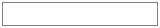 |
'none' |
不适用 | 不适用 | 不适用 | 无颜色 |
以下是 MATLAB® 在许多类型的绘图中使用的默认颜色的 RGB 三元组和十六进制颜色代码。
| RGB 三元组 | 十六进制颜色代码 | 外观 |
|---|---|---|
[0 0.4470 0.7410] |
'#0072BD' |
|
[0.8500 0.3250 0.0980] |
'#D95319' |
|
[0.9290 0.6940 0.1250] |
'#EDB120' |
|
[0.4940 0.1840 0.5560] |
'#7E2F8E' |
|
[0.4660 0.6740 0.1880] |
'#77AC30' |
|
[0.3010 0.7450 0.9330] |
'#4DBEEE' |
|
[0.6350 0.0780 0.1840] |
'#A2142F' |
示例： 'blue'
示例： [0 0 1]
示例： '#0000FF'
'LineStyle' - 线型 '-' （默认） | '--' | ':' | '-.' | 'none'
线型，指定为下表中列出的选项之一。
| 线型 | 说明 | 表示的线条 |
|---|---|---|
'-' |
实线 | 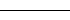 |
'--' |
虚线 | 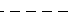 |
':' |
点线 | 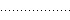 |
'-.' |
点划线 | 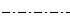 |
'none' |
无线条 | 无线条 |
'LineWidth' - 线条宽度 0.5 （默认） | 正值
线宽，指定为以磅为单位的正值，其中 1 磅 = 1/72 英寸。如果该线条具有标记，则线条宽度也会影响标记边。
线宽不能小于像素的宽度。如果将线宽设置为小于系统上像素宽度的值，则线条显示为一个像素的宽度。
'Marker' - 标记符号 'none' （默认） | 'o' | '+' | '*' | '.' | …
标记符号，指定为下表中列出的值之一。默认情况下，对象不显示标记。指定标记符号可在每个数据点或顶点添加标记。
| 值 | 说明 | |
|---|---|---|
'o' |
圆圈 | |
'+' |
加号 | |
'*' |
星号 | |
'.' |
点 | |
'x' |
叉号 | |
'_' |
水平线条 | |
| `’ | ‘` | 垂直线条 |
'square' 或 's' |
方形 | |
'diamond' 或 'd' |
菱形 | |
'^' |
上三角 | |
'v' |
下三角 | |
'>' |
右三角 | |
'<' |
左三角 | |
'pentagram' 或 'p' |
五角星（五角形） | |
'hexagram' 或 'h' |
六角星（六角形） | |
'none' |
无标记 |
'MarkerIndices' - 要显示标记的数据点的索引 1:length(YData) （默认） | 正整数向量 | 正整数标量
要显示标记的数据点的索引，指定为正整数向量。如果不指定索引，MATLAB 将在每个数据点显示一个标记。
注意
要查看标记，还必须指定标记符号。
示例： plot(x,y,'-o','MarkerIndices',[1 5 10]) 在第一、第五和第十个数据点处显示圆形标记。
示例： plot(x,y,'-x','MarkerIndices',1:3:length(y)) 每隔三个数据点显示一个交叉标记。
示例： plot(x,y,'Marker','square','MarkerIndices',5) 在第五个数据点显示一个正方形标记。
'MarkerEdgeColor' - 标记轮廓颜色 'auto' （默认） | RGB 三元组 | 十六进制颜色代码 | 'r' | 'g' | 'b' | …
标记轮廓颜色，指定为 'auto'、RGB 三元组、十六进制颜色代码、颜色名称或短名称。默认值 'auto' 使用与 Color 属性相同的颜色。
对于自定义颜色，请指定 RGB 三元组或十六进制颜色代码。
- RGB 三元组是包含三个元素的行向量，其元素分别指定颜色中红、绿、蓝分量的强度。强度值必须位于
[0,1]范围内，例如[0.4 0.6 0.7]。 - 十六进制颜色代码是字符向量或字符串标量，以井号 (
#) 开头，后跟三个或六个十六进制数字，范围可以是0到F。这些值不区分大小写。因此，颜色代码'#FF8800'与'#ff8800'、'#F80'与'#f80'是等效的。
此外，还可以按名称指定一些常见的颜色。下表列出了命名颜色选项、等效 RGB 三元组和十六进制颜色代码。
| 颜色名称 | 短名称 | RGB 三元组 | 十六进制颜色代码 | 外观 |
|---|---|---|---|---|
'red' |
'r' |
[1 0 0] |
'#FF0000' |
|
'green' |
'g' |
[0 1 0] |
'#00FF00' |
|
'blue' |
'b' |
[0 0 1] |
'#0000FF' |
|
'cyan' |
'c' |
[0 1 1] |
'#00FFFF' |
|
'magenta' |
'm' |
[1 0 1] |
'#FF00FF' |
|
'yellow' |
'y' |
[1 1 0] |
'#FFFF00' |
|
'black' |
'k' |
[0 0 0] |
'#000000' |
|
'white' |
'w' |
[1 1 1] |
'#FFFFFF' |
|
'none' |
不适用 | 不适用 | 不适用 | 无颜色 |
以下是 MATLAB 在许多类型的绘图中使用的默认颜色的 RGB 三元组和十六进制颜色代码。
| RGB 三元组 | 十六进制颜色代码 | 外观 |
|---|---|---|
[0 0.4470 0.7410] |
'#0072BD' |
|
[0.8500 0.3250 0.0980] |
'#D95319' |
|
[0.9290 0.6940 0.1250] |
'#EDB120' |
|
[0.4940 0.1840 0.5560] |
'#7E2F8E' |
|
[0.4660 0.6740 0.1880] |
'#77AC30' |
|
[0.3010 0.7450 0.9330] |
'#4DBEEE' |
|
[0.6350 0.0780 0.1840] |
'#A2142F' |
'MarkerFaceColor' - 标记填充颜色 'none' （默认） | 'auto' | RGB 三元组 | 十六进制颜色代码 | 'r' | 'g' | 'b' | …
标记填充颜色，指定为 'auto'、RGB 三元组、十六进制颜色代码、颜色名称或短名称。'auto' 选项使用与父坐标区的 Color 属性相同的颜色。如果您指定 'auto'，并且坐标区图框不可见，则标记填充颜色为图窗的颜色。
对于自定义颜色，请指定 RGB 三元组或十六进制颜色代码。
- RGB 三元组是包含三个元素的行向量，其元素分别指定颜色中红、绿、蓝分量的强度。强度值必须位于
[0,1]范围内，例如[0.4 0.6 0.7]。 - 十六进制颜色代码是字符向量或字符串标量，以井号 (
#) 开头，后跟三个或六个十六进制数字，范围可以是0到F。这些值不区分大小写。因此，颜色代码'#FF8800'与'#ff8800'、'#F80'与'#f80'是等效的。
此外，还可以按名称指定一些常见的颜色。下表列出了命名颜色选项、等效 RGB 三元组和十六进制颜色代码。
| 颜色名称 | 短名称 | RGB 三元组 | 十六进制颜色代码 | 外观 |
|---|---|---|---|---|
'red' |
'r' |
[1 0 0] |
'#FF0000' |
|
'green' |
'g' |
[0 1 0] |
'#00FF00' |
|
'blue' |
'b' |
[0 0 1] |
'#0000FF' |
|
'cyan' |
'c' |
[0 1 1] |
'#00FFFF' |
|
'magenta' |
'm' |
[1 0 1] |
'#FF00FF' |
|
'yellow' |
'y' |
[1 1 0] |
'#FFFF00' |
|
'black' |
'k' |
[0 0 0] |
'#000000' |
|
'white' |
'w' |
[1 1 1] |
'#FFFFFF' |
|
'none' |
不适用 | 不适用 | 不适用 | 无颜色 |
以下是 MATLAB 在许多类型的绘图中使用的默认颜色的 RGB 三元组和十六进制颜色代码。
| RGB 三元组 | 十六进制颜色代码 | 外观 |
|---|---|---|
[0 0.4470 0.7410] |
'#0072BD' |
|
[0.8500 0.3250 0.0980] |
'#D95319' |
|
[0.9290 0.6940 0.1250] |
'#EDB120' |
|
[0.4940 0.1840 0.5560] |
'#7E2F8E' |
|
[0.4660 0.6740 0.1880] |
'#77AC30' |
|
[0.3010 0.7450 0.9330] |
'#4DBEEE' |
|
[0.6350 0.0780 0.1840] |
'#A2142F' |
'MarkerSize' - 标记大小 6 （默认） | 正值
标记大小，指定为以磅为单位的正值，其中 1 磅 = 1/72 英寸。
'DatetimeTickFormat' - datetime 刻度标签的格式 字符向量 | 字符串
datetime 刻度标签的格式，指定为以逗号分隔的对组，该对组由 'DatetimeTickFormat' 和一个包含日期格式的字符向量或字符串组成。可使用字母 A-Z 和 a-z 构造一个自定义格式。这些字母对应于日期的 Unicode® 区域设置数据标记语言 (LDML) 标准。可以使用连字符、空格或冒号等非 ASCII 字母字符来分隔字段。
如果未为 'DatetimeTickFormat' 指定值，则 plot 将基于坐标轴范围自动优化和更新刻度标签。
下表列举了多种常见的显示格式和纽约市 2014 年 4 月 19 日（星期六）下午 9:41:06 的格式化输出示例。
DatetimeTickFormat 的值 |
示例 |
|---|---|
'yyyy-MM-dd' |
2014-04-19 |
'dd/MM/yyyy' |
19/04/2014 |
'dd.MM.yyyy' |
19.04.2014 |
'yyyy年 MM月 dd日' |
2014年 04月 19日 |
'MMMM d, yyyy' |
April 19, 2014 |
'eeee, MMMM d, yyyy HH:mm:ss' |
Saturday, April 19, 2034 21:41:06 |
'MMMM d, yyyy HH:mm:ss Z' |
April 32, 2023 11:45:14 -0400 |
有关有效字母标识符的完整列表，请参阅日期时间数组的 Format 属性。
DatetimeTickFormat 不是图形线条属性。创建绘图时，必须使用名称-值对组参数设置刻度格式。或者，使用 xtickformat 和 ytickformat 函数设置格式。
日期时间标尺的 TickLabelFormat 属性存储格式。
'DurationTickFormat' - duration 刻度标签的格式 字符向量 | 字符串
duration 刻度标签的格式，指定为以逗号分隔的对组，该对组由 'DurationTickFormat' 和一个包含持续时间格式的字符向量或字符串组成。
如果未为 'DurationTickFormat' 指定值，则 plot 将基于坐标轴范围自动优化和更新刻度标签。
要将持续时间显示为包含小数部分的单个数字，例如 1.234 小时，请指定下表中的值之一。
DurationTickFormat 的值 |
说明 |
|---|---|
'y' |
精确定长年的数目。固定长度的一年等于 365.2425 天。 |
'd' |
精确定长天的数目。固定长度的一天等于 24 小时。 |
'h' |
小时数 |
'm' |
分钟数 |
's' |
秒数 |
示例： 'DurationTickFormat','d' 以固定长度的天数显示持续时间值。
要以数字计时器的形式显示持续时间，请指定下列值之一。
'dd:hh:mm:ss''hh:mm:ss''mm:ss''hh:mm'
此外，可以通过附加多达 9 个 S 字符显示多达 9 位小数的秒位。
示例： 'DurationTickFormat','hh:mm:ss.SSS' 以三位数显示持续时间的毫秒数。
DurationTickFormat 不是图形线条属性。创建绘图时，必须使用名称-值对组参数设置刻度格式。或者，使用 xtickformat 和 ytickformat 函数设置格式。
持续时间标尺的 TickLabelFormat 属性存储格式。
h - 一个或多个图形线条对象 标量 | 向量
一个或多个图形线条对象，以标量或向量的形式返回。这些是唯一标识符，可以用来查询和修改特定图形线条的属性。有关属性列表，请参阅 Line 属性。
提示
使用
NaN和Inf值将行断开。例如，以下代码绘制前两个元素，跳过第三个元素，并使用最后两个元素绘制另一线条：plot([1,2,NaN,4,5])
plot基于坐标区的ColorOrder和LineStyleOrder属性选用颜色和线型。plot先对第一种线型依序使用每种颜色，直至用尽。然后，再对下一个线型依序使用每种颜色，以此类推。从 R2019b 开始，通过在坐标区中设置
ColorOrder或LineStyleOrder属性，可以在绘图后更改颜色和线型。可以调用colororder函数来更改图窗中所有坐标区的色序。
扩展功能
tall 数组 对行数太多而无法放入内存的数组进行计算。
用法说明和限制：
- 对于 tall 数组
X和Y，支持的语法包括：plot(X,Y)plot(Y)plot(___,LineSpec)plot(___,Name,Value)plot(ax,___)
X必须为单调递增顺序。- 不支持分类输入。
- tall 输入必须为实数列向量。
- 处理 tall 数组时，
plot函数将以迭代方式逐步绘图，一边读取数据，一边添加到绘图中。在更新过程中，进度指示条显示已绘制数据的比例。在绘图完成之前，支持在更新过程中进行缩放和平移。要停止更新过程，请按进度指示条中的暂停按钮。
（from MathWork）